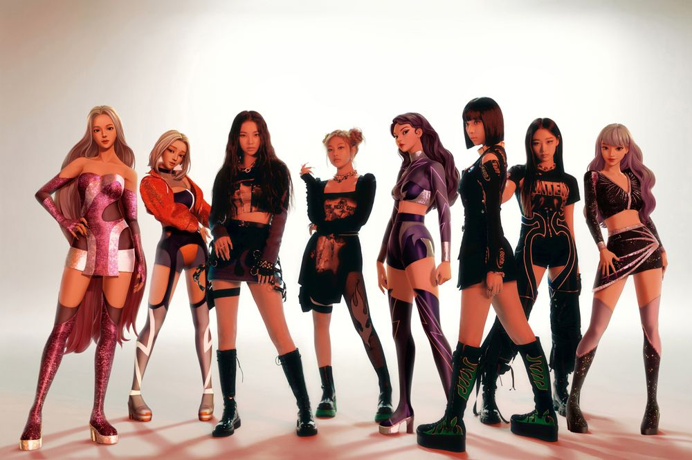

aespa의 스토리텔링에 대해서는 ‘현실 세계’에 존재하는 아티스트 멤버와 ‘가상 세계’에 존재하는 아바타 멤버가 현실과 가상의 중간 세계인 ‘디지털 세계’를 통해 소통하고 교감하며 성장해가는 스토리텔링을 가지고 있다. ‘현실 세계’의 멤버들과 ‘가상 세계’의 아바타 멤버들, 그들의 곁에서 서포트해주고 조력자 역할을 하는 ‘가상세계’ 속의 신비로운 존재들이 그룹의 멤버로서, 현실에서 함께 활동할 수 있는 획기적인 아이덴티티를 가지는 신개념 그룹이다. ‘현실 세계’ 멤버들과 ‘가상 세계’ 멤버들이 서로 다른 유기체로서 AI 브레인을 가지고 있기 때문에 서로 대화를 하고, 조력도 해 주고, 친구가 되어 주고, 각자 세계의 정보를 나누고, 각자의 세계를 오가는 등 새로운 개념의 스토리텔링을 선보일 예정이라고 한다.